Core Principles Masterclass · หนึ่งไฟล์ หนึ่งหลักการ "ทุกระบบ AIoT ในฟาร์ม ตั้งแต่เครื่องรดน้ำถึงหมอฟังปั๊ม ใช้หัวใจดวงเดียวกัน"
AIoT Development for Smart Farm · Intensive Course · TESAIoT Dev Kit + BENTO Emulator
หลัง Session 3 ก่อนวันนำเสนอผลงาน
สิ่งที่จะทำได้เมื่อจบคาบ
ทุกส่วนมีจังหวะเดียวกัน
หลัง Session 3 ก่อนวันนำเสนอผลงาน · ทุกกฎโยงกับ 5 เสาหลัก
คาบ 1–3 สอนผ่าน แอปฟาร์มทั้งตัว · คาบนี้แยกหัวใจออกเป็น การ์ดหลักการ ทีละใบ แล้วประกอบกลับเป็นการ์ดออกแบบของกลุ่ม
core/
1 · วัด
★ cp1_01_button_patterns ★ cp1_02_knob_scaling ★ cp1_03_loop_clock ★ cp1_04_calibrate
cp1_01_button_patterns
cp1_02_knob_scaling
cp1_03_loop_clock
cp1_04_calibrate
2 · ตัดสิน
★ cp2_01_filter_race ☆ cp2_02_rolling_stats ★ cp2_03_decision_ladder ★ cp2_04_sound_spectrum ☆ cp2_05_dew_point_guard ★ cp2_06_ai_confidence_gate
cp2_01_filter_race
cp2_02_rolling_stats
cp2_03_decision_ladder
cp2_04_sound_spectrum
cp2_05_dew_point_guard
cp2_06_ai_confidence_gate
3 · ทำ
★ cp3_01_status_language ☆ cp3_02_matrix_toolkit ★ cp3_03_report_by_exception ☆ cp3_04_command_confirm ☆ cp3_05_two_pipes ★ cp3_06_modbus_frame
cp3_01_status_language
cp3_02_matrix_toolkit
cp3_03_report_by_exception
cp3_04_command_confirm
cp3_05_two_pipes
cp3_06_modbus_frame
4 · โชว์
★ cp4_01_one_value_many_faces ★ cp4_02_style_at_runtime ★ cp4_03_event_router ☆ cp4_04_draw_on_screen ★ cp4_05_hmi_page_pattern
cp4_01_one_value_many_faces
cp4_02_style_at_runtime
cp4_03_event_router
cp4_04_draw_on_screen
cp4_05_hmi_page_pattern
#
____
ไฟล์ฝึกอยู่ใน core/practise/ · เฉลยโจทย์หลักอยู่ใน core/practise/solutions/
core/practise/
core/practise/solutions/
ติดขัด? บันไดช่วยเหลือ 5 ขั้น
ใบงาน: core/sf-core-th.worksheet.md (มีภาคผนวก สรุปคำสั่งหนึ่งหน้าต่อส่วน)
core/sf-core-th.worksheet.md
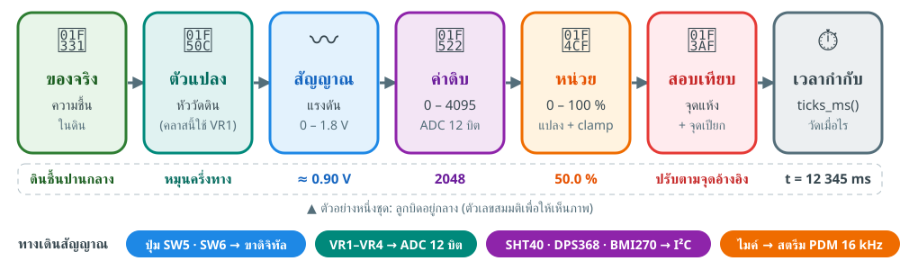
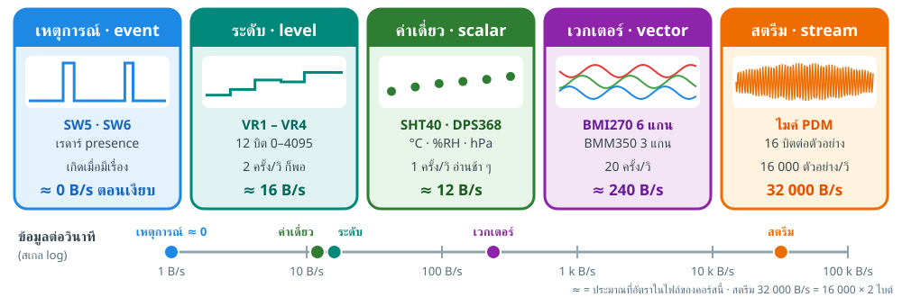
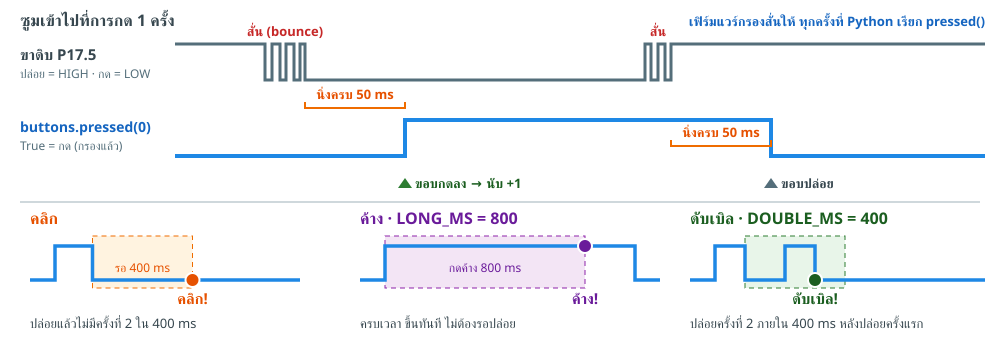
buttons.pressed()
pressed()
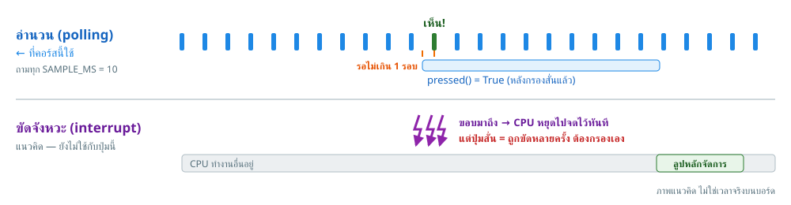
คอร์สนี้ใช้การอ่านวน (polling) เพราะ
buttons
read()
name()
count()
ยังไม่ได้ลอง: machine.Pin.irq มีอยู่ในเฟิร์มแวร์ แต่ขาของ SW5/SW6 ถูกโมดูล buttons ใช้อยู่ — การผูก interrupt กับขาเดียวกัน ต้องลองบนบอร์ด ก่อนจึงจะสอนได้
machine.Pin.irq
interrupt เหมาะกับ สัญญาณที่สั้นมากจนอ่านวนไม่ทัน เช่น พัลส์จากมาตรวัดน้ำ (แนวคิด) · งานใน interrupt ต้องสั้น: จดไว้ แล้วให้ลูปหลักทำต่อ
เป้าหมาย: แยกให้ออกว่า "กดอยู่" "เพิ่งกด" และ "กดแบบไหน" ต่างกันอย่างไร และเห็นว่า เวลา คือตัวตัดสินรูปแบบ
ลองทำ · cp1_01_button_patterns.py
cp1_01_button_patterns.py
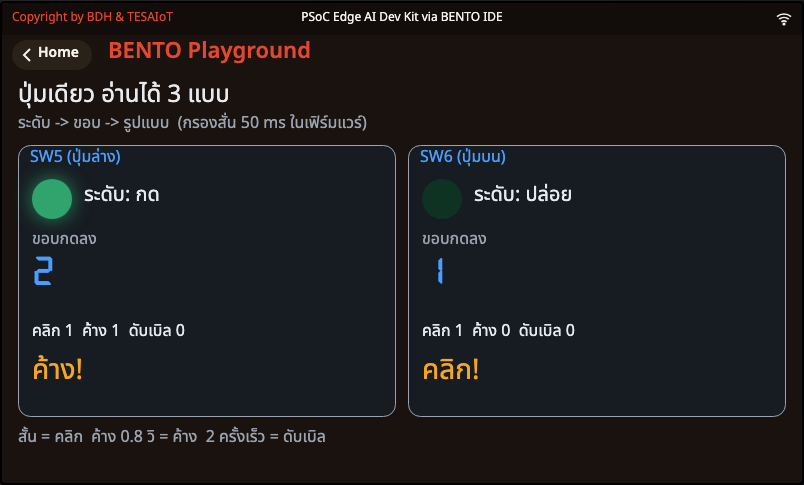
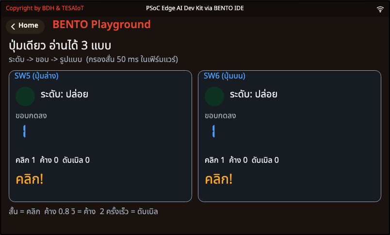
def feed(self, down, now): ev = None if down and not self.down: # ขอบ: เพิ่งกดลง self.edges += 1 self.t_down, self.held = now, False elif down and not self.held and time.ticks_diff(now, self.t_down) >= LONG_MS: self.held, self.t_up, ev = True, None, "long" elif self.down and not down and not self.held: # ขอบ: เพิ่งปล่อยหลังกดสั้น if self.t_up is not None and time.ticks_diff(now, self.t_up) <= DOUBLE_MS: self.t_up, ev = None, "double" else: self.t_up = now # รอดูก่อนว่าจะมีครั้งที่สองไหม elif not down and self.t_up is not None and time.ticks_diff(now, self.t_up) > DOUBLE_MS: self.t_up, ev = None, "click" # หมดเวลารอ = คลิกเดี่ยว
feed()
คิด: ทำไม "คลิก!" ขึ้นช้ากว่าตอนปล่อยปุ่มราว 0.4 วิ? ถ้าตู้ควบคุมของเราไม่ใช้ดับเบิลเลย ควรแก้ตรงไหนให้คลิกตอบทันที?
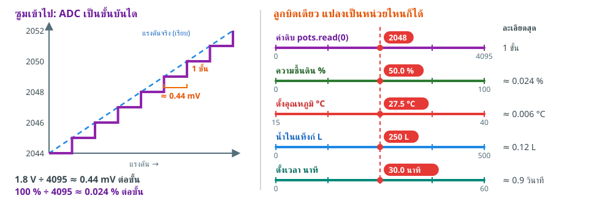
DEADBAND
pots.norm(0)
pots.percent()
เป้าหมาย: แปลงเลขดิบ 0–4095 เป็น % องศา ลิตร นาที แล้วเห็นว่าช่องกันกะพริบทำให้ตัวเลขนิ่ง
ลองทำ · cp1_02_knob_scaling.py
cp1_02_knob_scaling.py
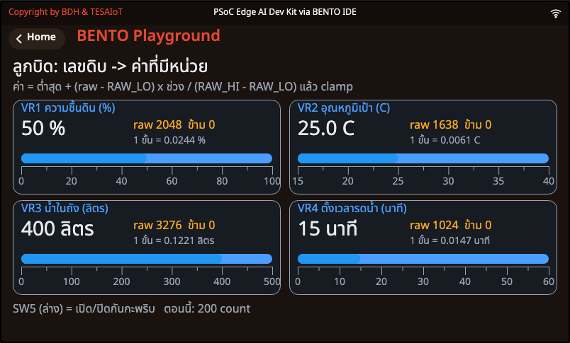
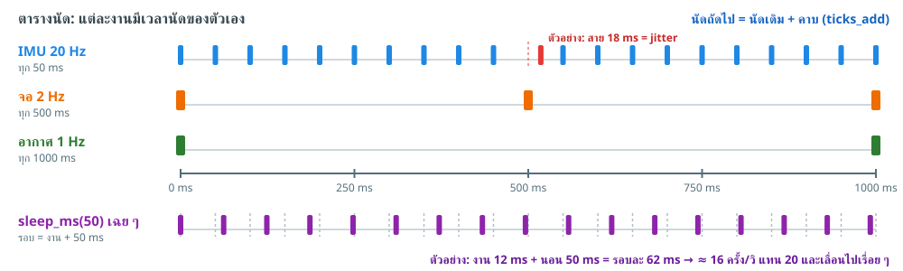
self.due = time.ticks_add(self.due, self.period)
ticks_diff()
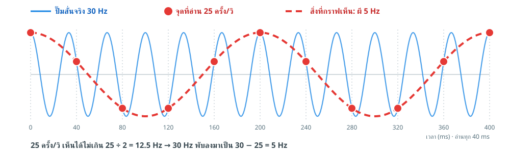
คิด: cp1_03 อ่าน IMU 20 ครั้ง/วิ — เห็นการสั่นได้ไม่เกินกี่ Hz? พอสำหรับปั๊ม 30 Hz ไหม?
เป้าหมาย: วัดให้เห็นว่าลูปแบบ นัด (ticks_add) รักษาจังหวะได้ ส่วนลูป นอนรอ (sleep_ms) ช้าสะสม
ticks_add
sleep_ms
ลองทำ · cp1_03_loop_clock.py
cp1_03_loop_clock.py
ตัวเลขเวลาใน Emulator ไม่ใช่ เวลาของบอร์ด (เบราว์เซอร์มีจังหวะของตัวเอง) — จะสรุปว่าช้าเร็วเท่าไร ต้องดูจากบอร์ดจริง
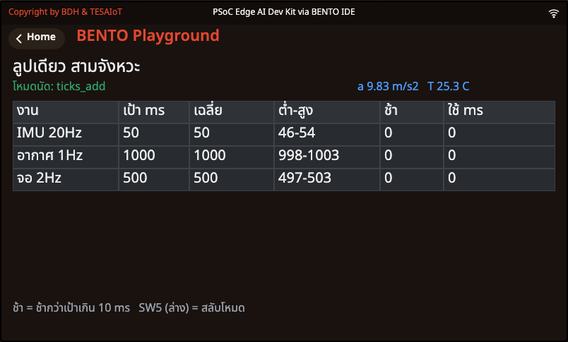
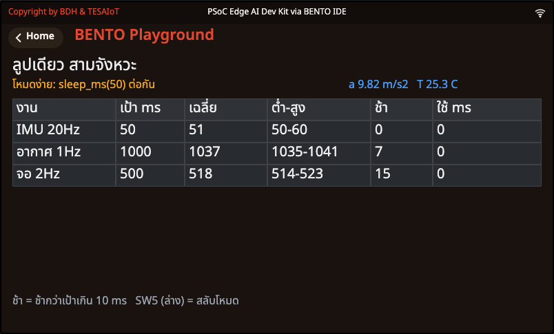
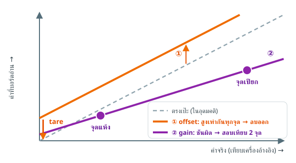
① ชดเชย (offset) SHT40 อยู่บนบอร์ด จึงวัดความอุ่นของบอร์ดติดมาด้วย → เทียบเทอร์โมมิเตอร์ในห้อง แล้วใส่ TEMP_OFFSET
TEMP_OFFSET
ตั้งศูนย์ (tare) บอร์ดวางนิ่งก็เอียงอยู่แล้ว (เอียงราว 39° บนโต๊ะเรา) → จดท่านี้ไว้เป็น 0° แล้วลบออกทุกครั้ง
② สองจุด (two-point) หัววัดดินแต่ละตัวให้ค่าดิบไม่เท่ากัน → จับค่าดินแห้ง = 0 % และดินอิ่มน้ำ = 100 % แก้ทั้งชดเชยและความชันในครั้งเดียว
เชื่อก่อนต้องตรวจ: อ่านพลาดลองใหม่ 3 ครั้ง ยังพลาดก็คืน None ไม่ให้โปรแกรมล้ม · ผลสองจุดถูกบีบให้อยู่ 0–100 % · จุดแห้งกับจุดเปียกใกล้กันเกิน MIN_SPAN = ไม่หาร
None
MIN_SPAN
เป้าหมาย: แก้ความเพี้ยน 3 แบบด้วยเลขง่าย ๆ: บวกค่าคงที่ · หักศูนย์ · สองจุด
ลองทำ · cp1_04_calibrate.py
cp1_04_calibrate.py
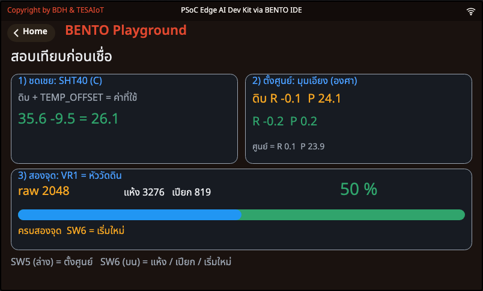
pots.read(0)
DOUBLE_MS = 400
LONG_MS = 2000
CLIMATE_MS = 250
cp1_02_practise.py
map_range()
clamp()
ระดับ 1–2 ทำระหว่างช่วง "เล่น" แล้วเฉลยในคาบ · ระดับ 3–4 เป็นการบ้าน รันใน BENTO Emulator ได้
อ่านให้ถูกจังหวะ แปลงให้มีหน่วย และสอบเทียบก่อนเชื่อ
การ์ดออกแบบของกลุ่ม ช่อง "วัด": อินพุตอะไร · ข้อมูลรูปร่างแบบไหน · อ่านกี่ครั้ง/วิ · สอบเทียบอย่างไร?
What is Switch Bounce and How to Debounce – ATM | Digi-Key Electronics ช่อง DigiKey https://www.youtube.com/watch?v=IvU8m_30iK0
ดูแล้วตอบ: สัญญาณสั่นในคลิปตรงกับช่วง "สั่น" ในภาพไทม์ไลน์ของเราตรงไหน และทำไมต้องรอให้นิ่งก่อนจึงยอมรับ?
ADC Quantization and Resolution ช่อง Microchip Developer Help https://www.youtube.com/watch?v=plq_Nmud5CM
ดูแล้วตอบ: ถ้า ADC เป็น 10 บิต แทน 12 บิต 1 ขั้นของความชื้นดินจะหยาบขึ้นเป็นกี่ %?
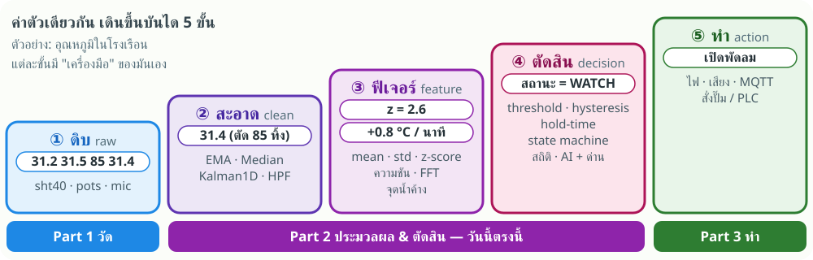
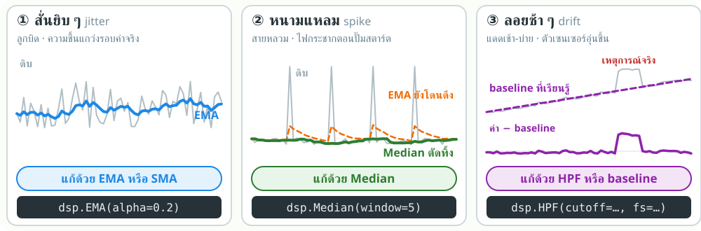
f.update(x)
f.value()
f.reset()
dsp.EMA(alpha=0.2)
dsp.EMA(0.2)
int(round(x))
Median(window=…)
SMA(window=…)
Kalman1D(q=…, r=…)
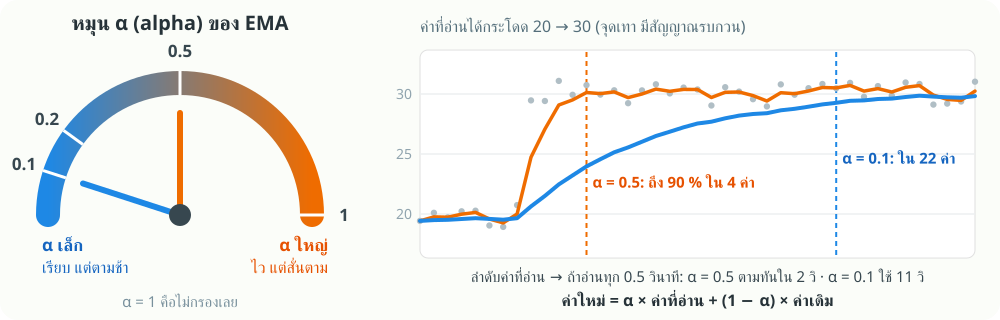
คิด: ความชื้นดิน (เปลี่ยนเป็นชั่วโมง) กับเสียงสั่นของปั๊ม (เปลี่ยนในวินาที) ควรใช้ α แบบไหน?
เป้าหมาย: นับให้เห็นว่าตัวกรองแต่ละตัว ปล่อยหนามผ่าน กี่ครั้ง แล้วเลือกตัวที่ตรงรูปของสัญญาณรบกวน
ลองทำ · cp2_01_filter_race.py
cp2_01_filter_race.py
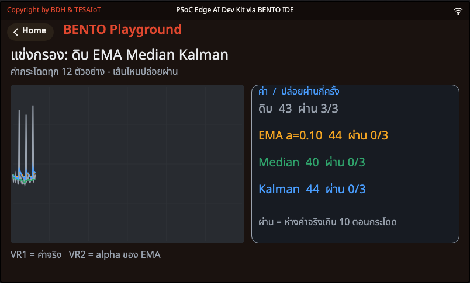
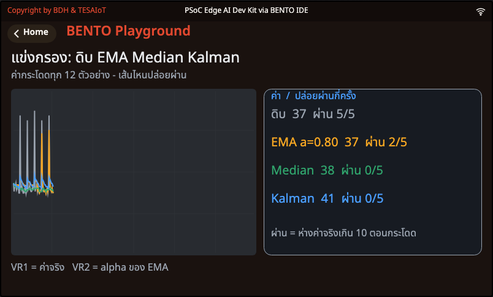
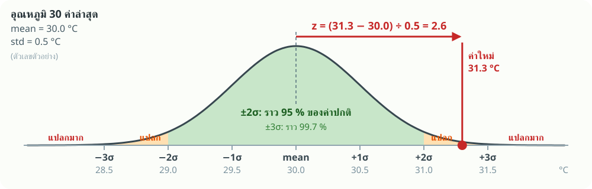
dsp
สูตร Welford: เดินผ่านหน้าต่างรอบเดียว ได้ทั้ง mean และ std
def mean_sd(win): # Welford: เดินผ่านหน้าต่างรอบเดียว ได้ค่าเฉลี่ยและ SD (แบบตัวอย่าง หารด้วย n - 1) # ไม่ต้องบวกกำลังสองก้อนใหญ่แล้วลบกัน ซึ่งทำให้ทศนิยมหายบน float 32 บิตของบอร์ด n, mean, m2 = 0, 0.0, 0.0 for x in win: n += 1 d = x - mean mean += d / n m2 += d * (x - mean) return mean, (math.sqrt(m2 / (n - 1)) if n > 1 else 0.0) def zscore(x, mean, sd, sd_min): # z = ห่างจากค่าเฉลี่ยกี่ SD (บวก = สูงกว่าปกติ ลบ = ต่ำกว่าปกติ) return (x - mean) / max(sd, sd_min)
คิด: ทำไมไฟล์นี้เทียบค่าล่าสุดกับ 30 ค่า ก่อนหน้า โดยไม่รวมตัวมันเอง?
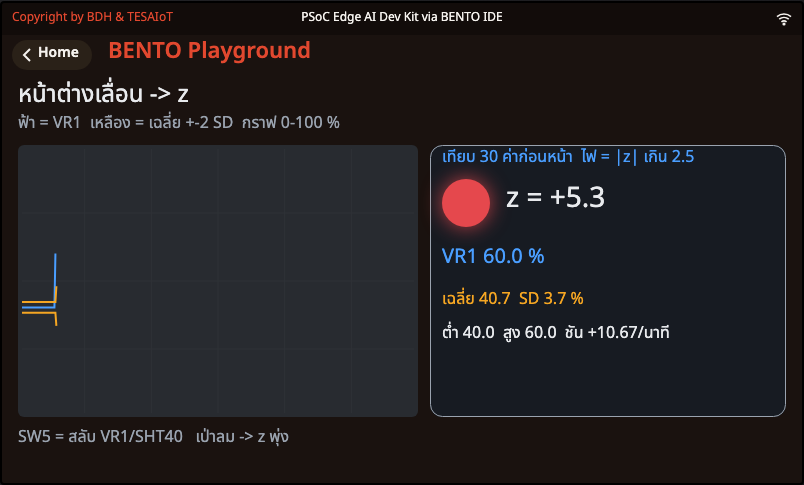
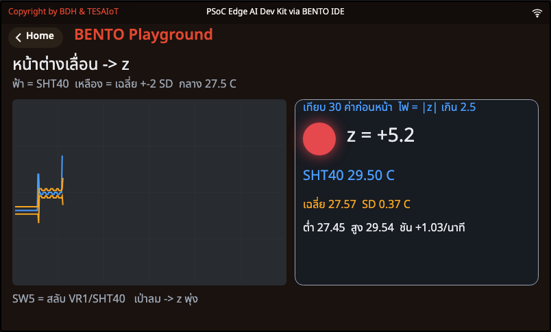
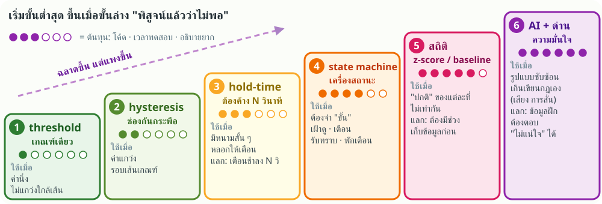
"สัญญาณเตือนที่คนเรียนรู้ที่จะเมิน แย่กว่าไม่มีสัญญาณเตือน" — เตือนผิดบ่อย คนจะเลิกฟัง แล้ววันที่ร้อนจริงก็ไม่มีใครมา
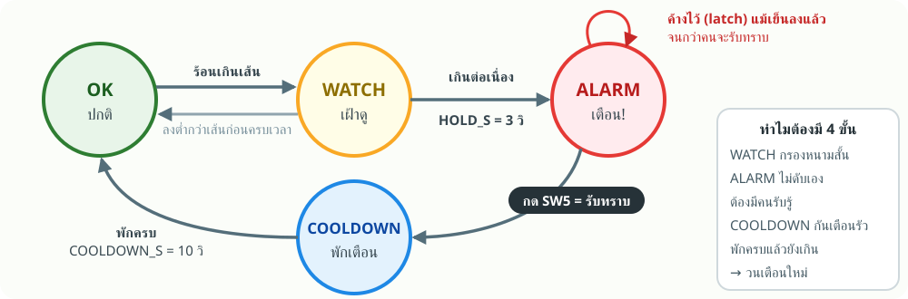
next_state(state, over, ack, t_s)
เป้าหมาย: เห็นเป็น ตัวเลข ว่าแต่ละขั้นของบันได "สลับติด/ดับ" กี่ครั้ง บนค่าเดียวกัน
ลองทำ · cp2_03_decision_ladder.py
cp2_03_decision_ladder.py
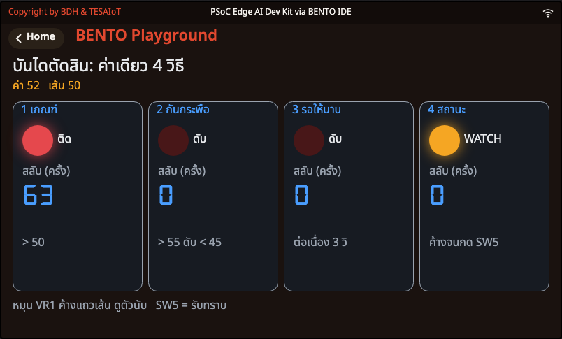
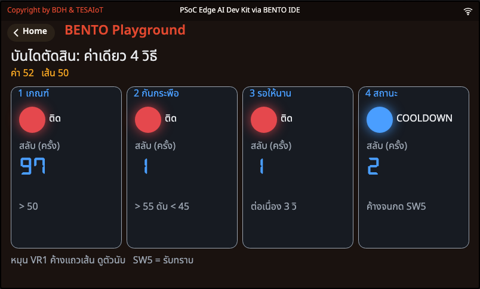
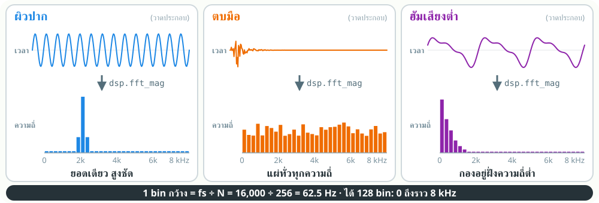
dsp.fft_mag(mic.raw(), 256)
เป้าหมาย: หาว่ายอดของเสียงอยู่ ช่องไหน แล้วแปลงเป็น Hz ด้วย ช่อง × 62.5
ลองทำ · cp2_04_sound_spectrum.py
cp2_04_sound_spectrum.py
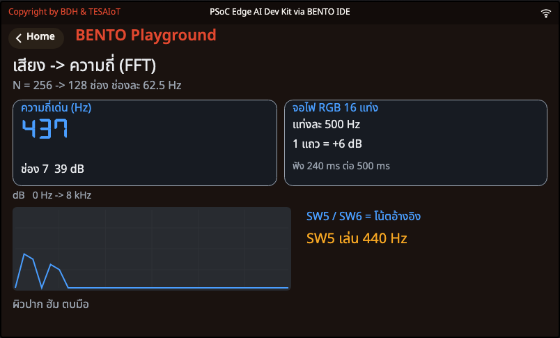
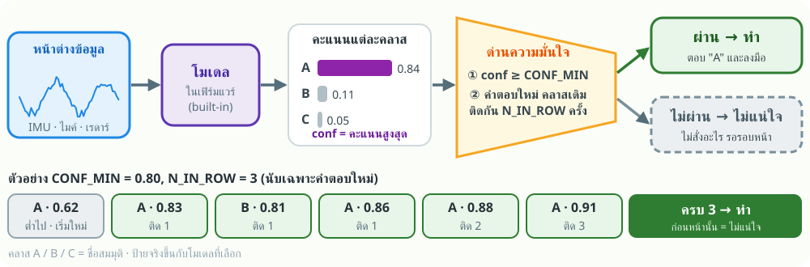
conf
edge_ai.result()
seq
edge_ai.models()
m["index"]
start()
select()
เป้าหมาย: รู้สึกด้วยมือว่าเกณฑ์สูง = ไม่แน่ใจบ่อย แต่ลงมือผิดน้อย · เกณฑ์ต่ำ = ตอบไว แต่เชื่อคำตอบกำกวมด้วย
ลองทำ · cp2_06_ai_confidence_gate.py
cp2_06_ai_confidence_gate.py
MODEL_KEY
☆ โจทย์เพิ่ม: โมเดลจริงอาจสลับคำตอบไปมา (วัดจริง: AnomalousVibration ขณะเขย่า) — ลองเปลี่ยน cp2_06 เป็น "อย่างน้อย 3 ใน 5 ครั้งล่าสุด" แล้วเทียบกัน
cp2_06
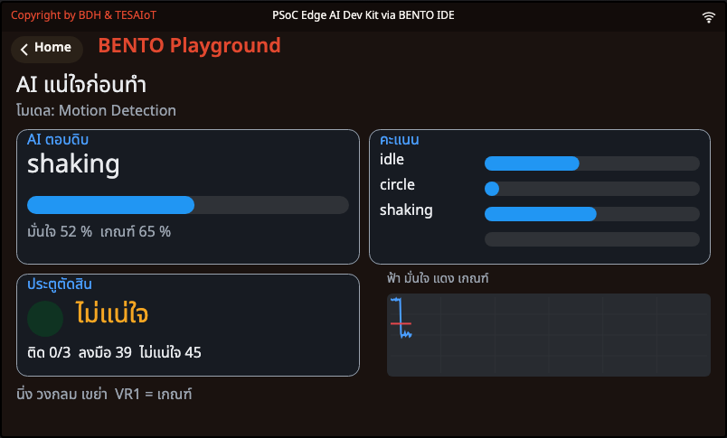
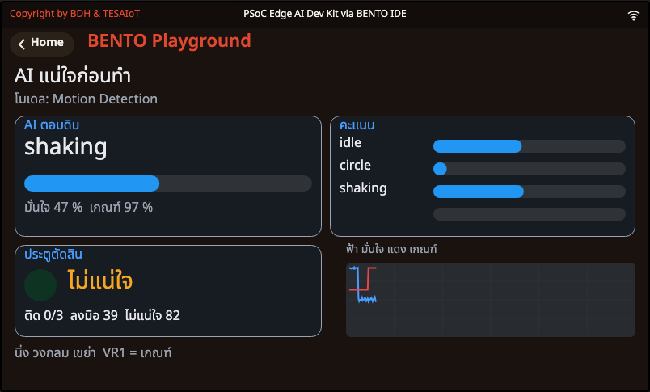
HOLD_S = 0
CONF_MIN = 0.95
cp2_03_practise.py
next_state()
cp2_02_rolling_stats.py
cp2_05_dew_point_guard.py
ระดับ 1–2 ทำระหว่างช่วง "เล่น" · ระดับ 3 ทุกทีมทำพร้อมกัน 10 นาที แล้วเฉลยในคาบ
def next_state(state, over, ack, t_s): # ขั้น 4: state = สถานะตอนนี้, over = เกินเส้นไหม, ack = เพิ่งกดรับทราบไหม # t_s = อยู่ในสถานะนี้มากี่วินาทีแล้ว คืนสถานะถัดไป if state == "OK": return "WATCH" if over else "OK" if state == "WATCH": if not over: return "OK" return "ALARM" if t_s >= ____ else "WATCH" # ช่อง A: เกินต่อเนื่องนานเท่าไรจึงเตือน? if state == "ALARM": return "COOLDOWN" if ____ else "ALARM" # ช่อง B: อะไรเท่านั้นที่ปลด ALARM ได้? return "OK" if t_s >= ____ else "COOLDOWN" # ช่อง C: พักนานเท่าไรจึงกลับ OK?
NameError: name '____' …
ยังไม่ถูก: next_state …
เฉลย (เปิดหลังลองเอง): cp2_03_practise_solution.py
cp2_03_practise_solution.py
กรองตามรูปของสัญญาณรบกวน ตัดสินด้วยขั้นบันไดที่ต่ำที่สุดที่ได้ผล และให้ AI มีสิทธิ์ตอบว่าไม่แน่ใจ
การ์ดออกแบบของกลุ่ม ช่อง "ตัดสิน": โปรเจกต์ของเราใช้ขั้นไหนของบันได และทำไมขั้นที่ต่ำกว่าถึงไม่พอ?
Calculating the Mean, Variance and Standard Deviation, Clearly Explained!!! ช่อง StatQuest with Josh Starmer https://www.youtube.com/watch?v=SzZ6GpcfoQY
ดูแล้วตอบ: ทำไม std มีหน่วยเดียวกับข้อมูล (°C) แต่ variance ไม่ใช่ และ z ใช้ตัวไหน?
But what is the Fourier Transform? A visual introduction. ช่อง 3Blue1Brown https://www.youtube.com/watch?v=spUNpyF58BY
ดูแล้วตอบ: ภาพ "ความถี่" ในคลิป ตรงกับ 128 ช่องที่ dsp.fft_mag คืนมาอย่างไร?
dsp.fft_mag
ระหว่างพัก ลองทายเล่น: ปั๊มที่เปิดตามเกณฑ์ความชื้นเป๊ะ ๆ ไม่มีช่องกันกระพือ ถ้าลูกบิดสั่นนิดเดียวรอบเกณฑ์ ใน 1 นาทีปั๊มจะเปิด-ปิดกี่ครั้ง? (ดูตัวนับใน cp2_03 ก่อนพัก)
cp2_03
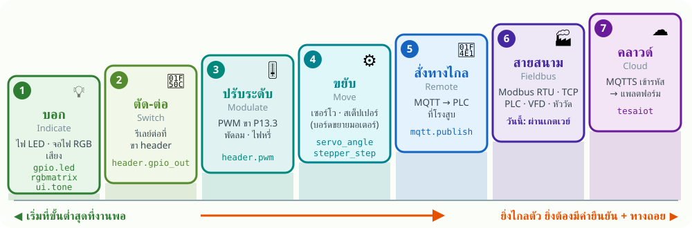
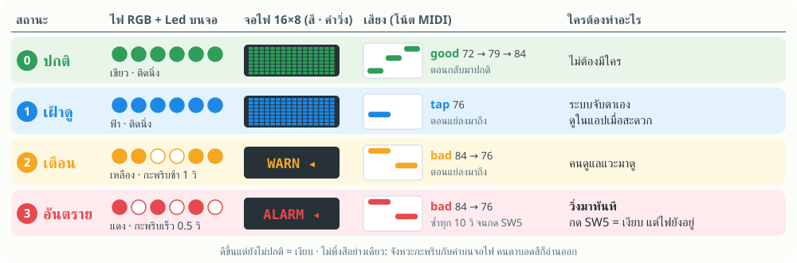
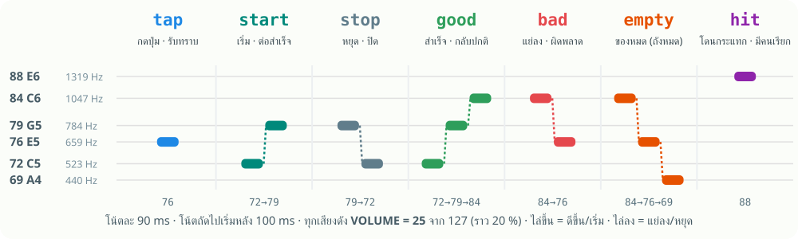
# เสียงเตือนใช้ ui.tone เพราะปรับความดังได้ (ui.sfx ในเฟิร์มแวร์นี้ปรับความดังไม่ได้) TUNES = {"tap": (76,), "start": (72, 79), "stop": (79, 72), "good": (72, 79, 84), "bad": (84, 76), "empty": (84, 76, 69), "hit": (88,)} def beep(name): for n in TUNES[name]: ui.tone(n, ui.WAVE_SINE, VOLUME, 90) time.sleep_ms(100)
beep(ชื่อ)
VOLUME = 25
ui.tone(โน้ต, คลื่น, ความดัง, ms)
ui.sfx
ui.volume()
VOLUME
เป้าหมาย: เห็นว่าสถานะเดียวออกทุกช่องทางพร้อมกัน และเสียงเตือนถูกคุมไม่ให้รำคาญ
ลองทำ · cp3_01_status_language.py
cp3_01_status_language.py
good
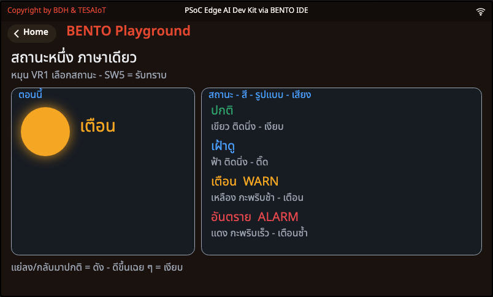
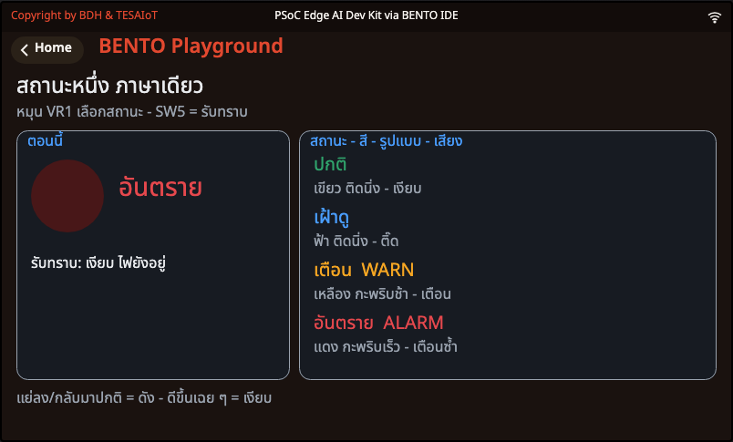
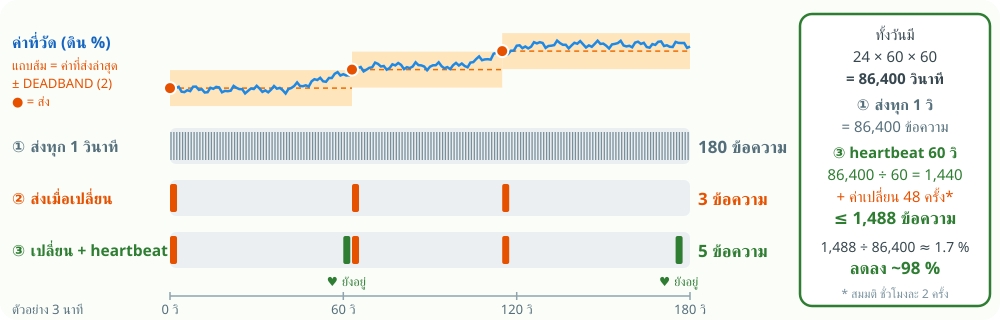
def why_send(value, last, quiet_ms): # ส่งใบนี้ไหม: "change" / "heartbeat" / None # last = ค่าในใบที่ส่งไปล่าสุด (None = ยังไม่เคยส่ง) - quiet_ms = เงียบมานานเท่าไรแล้ว if last is None or abs(value - last) > DEADBAND: return "change" if quiet_ms >= HEARTBEAT_S * 1000: return "heartbeat" return None
HEARTBEAT_S = 30
เป้าหมาย: เห็นกับตาว่าส่งน้อยลงเท่าไร โดยปลายทางยังรู้ว่าบอร์ดยังอยู่
ลองทำ · cp3_03_report_by_exception.py
cp3_03_report_by_exception.py
WIFI_SSID
WIFI_PASS
TEAM
bento-aiot/<TEAM>/core/#
n
up_s
why
ต่อ broker ไม่ได้ทันทีหลังหยุดโปรแกรม → รอ ~1 นาที หรือกด RESET แล้วรันใหม่
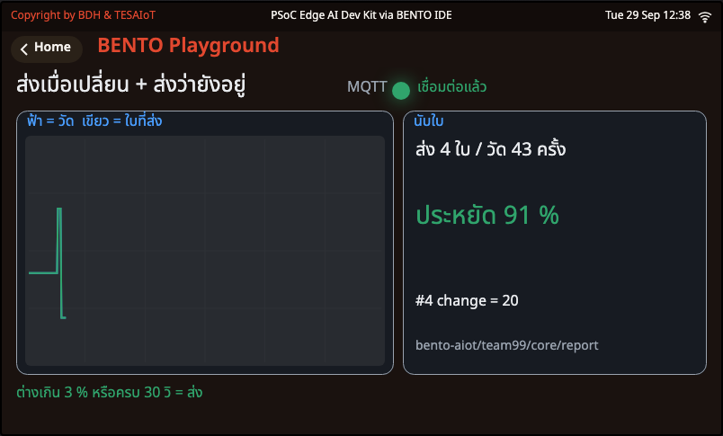
พอร์ต 1883 ไม่เข้ารหัส ใครก็อ่านหัวข้อเราได้ — ห้ามส่งรหัสหรือของลับ · n = เลขใบ (เห็นใบหาย) · up_s = บอร์ดเปิดมากี่วิ (เห็นรีสตาร์ต)
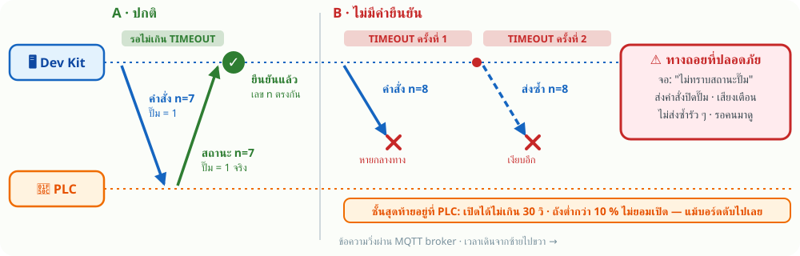
☆ cp3_04_command_confirm.py เล่นวงปิดนี้กับ field_sim.py บนโน้ตบุ๊ก: SW5 ขอเปิด 10 วิ · SW6 ขอปิด · รอ 3 วิ ส่งซ้ำ 1 ครั้ง · ยังเงียบ = สั่งปิดและถือว่า "ไม่รู้"
cp3_04_command_confirm.py
field_sim.py
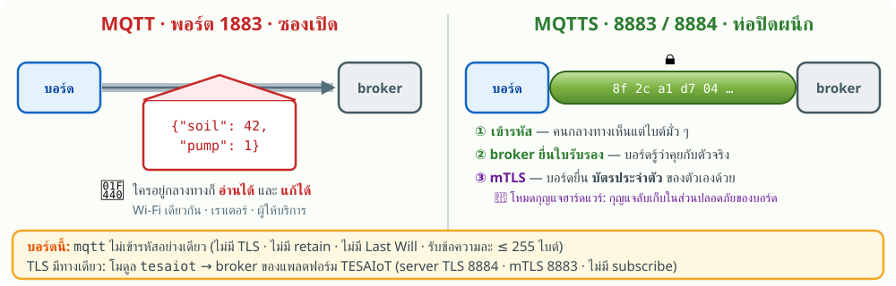
mqtt
☆ cp3_05_two_pipes.py ค่าเดียวกัน สองท่อ: ท่อ 1 โชว์ใบที่วิ่งใน mqtt 1883 ทีละตัวอักษร · ท่อ 2 อ่านค่าตั้งของ tesaiot (tls_mode, broker, พอร์ต) แบบไม่ต่อเน็ต
cp3_05_two_pipes.py
tesaiot
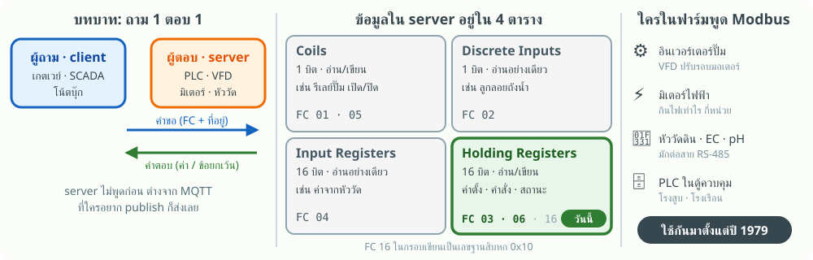
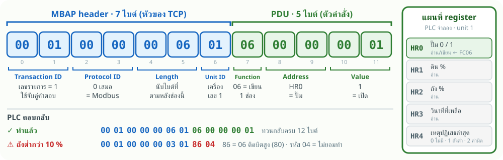
บอร์ดรุ่นนี้ยังส่ง Modbus TCP เองไม่ได้ (เฟิร์มแวร์ไม่มีโมดูล Modbus และไม่มี socket) — เราจึงให้บอร์ดส่ง "ความตั้งใจ" ผ่าน MQTT แล้วให้เกตเวย์บนโน้ตบุ๊กพูด Modbus TCP แทน
ลองทำ · cp3_06_modbus_frame.py
cp3_06_modbus_frame.py
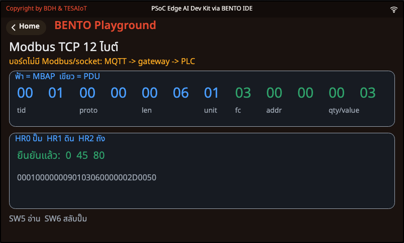
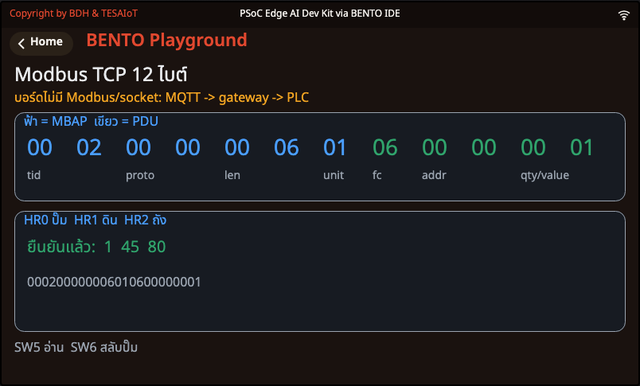
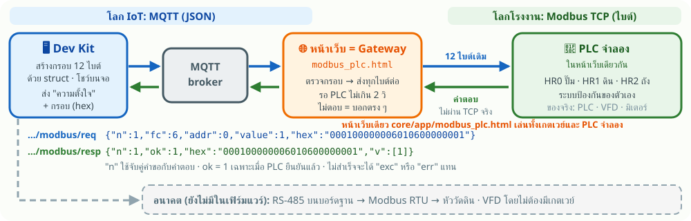
บนโน้ตบุ๊ก 2 หน้าต่าง (Python 3)
python modbus_plc_sim.py # 1: PLC จำลอง พอร์ต 5020 pip install paho-mqtt # ครั้งแรกครั้งเดียว python modbus_bridge.py # 2: แก้ TEAM ให้ตรงบอร์ดก่อน
modbus_plc_sim.py · modbus_bridge.py
modbus_plc_sim.py
modbus_bridge.py
ดูอะไร (บอร์ดตั้ง WiFi + TEAM เดียวกัน)
-> PLC
plc_offline
--tank 5
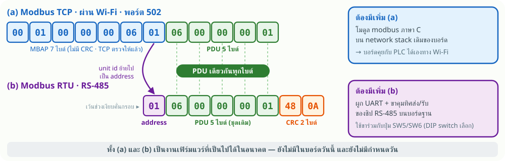
modbus
DEADBAND = 2
HEARTBEAT_S = 10
REPEAT_S = 3
cp3_06_practise.py
fc06_write()
struct
00 01 00 00 00 06 01 06 00 00 00 01
cp3_02_matrix_toolkit.py
ระดับ 1–2 ทำระหว่างช่วง "เล่น" แล้วเฉลยในคาบ · ระดับ 3 ผู้สอนเติมช่องแรกให้ดูสด แล้วทุกทีมเติมที่เหลือ · ระดับ 4 เป็นการบ้าน
def fc03_read(tid, unit, addr, qty): # FC03 อ่าน holding register qty ช่อง เริ่มที่ช่อง addr (ทำเสร็จแล้ว ใช้ดูเป็นตัวอย่าง) # ">HHHBBHH" = big-endian: tid(H) protocol(H) len(H) unit(B) | fc(B) addr(H) qty(H) รวม 12 ไบต์ return struct.pack(">HHHBBHH", tid & 0xFFFF, 0, 6, unit, 3, addr, qty) def fc06_write(tid, unit, addr, value): # FC06 เขียนค่า value ลง holding register ช่องเดียว (ช่อง addr) สร้างเป็นสองท่อนแล้วต่อกัน pdu = struct.pack(____, 6, addr, value) # ช่อง A: รูปแบบของ fc(1) addr(2) value(2) mbap = struct.pack(">HHHB", tid & 0xFFFF, 0, ____, unit) # ช่อง B: len = นับไบต์ที่ตามหลังช่องนี้ return mbap + pdu
fc03_read()
H
B
>
ยังไม่ถูก: fc06_write …
เฉลย (เปิดหลังลองเอง): cp3_06_practise_solution.py
cp3_06_practise_solution.py
สถานะหนึ่ง ภาษาเดียว · ส่งเมื่อเปลี่ยน + ส่งว่ายังอยู่ · ทุกคำสั่งต้องมีคำยืนยันและทางถอยที่ปลอดภัย
การ์ดออกแบบของกลุ่ม ช่อง "ทำ": สถานะมีกี่ระดับ ใช้สี/จังหวะ/เสียงอะไร · ส่งอะไร เมื่อไร heartbeat กี่วิ · คำสั่งไหนต้องรอคำยืนยัน ถ้าไม่มาจะถอยไปทางไหน?
Modbus Explained in 2 Minutes (How It Works + RTU vs TCP Explained) ช่อง ICP DAS USA, Inc. https://www.youtube.com/watch?v=OX5uhoHeFKw
ดูแล้วตอบ: กรอบ RTU มีอะไรที่ TCP ไม่มี และ TCP มีอะไรที่ RTU ไม่มี — เทียบกับภาพ "PDU เดียวกันทุกไบต์" ของเรา
เพียง 15 นาที เริ่มต้นกับ MODBUS อย่างไรให้เข้าใจง่ายๆ ช่อง ทําอะไรก็มีสุข (saroj1961) https://www.youtube.com/watch?v=fgicf8svA_E
ดูแล้วตอบ: ในเดโมของเรา ใครเป็นผู้ถาม (client) ใครเป็นผู้ตอบ (server) — บอร์ด เกตเวย์ หรือ PLC จำลอง? แล้วบอร์ดอยู่ในวง Modbus จริงไหม?
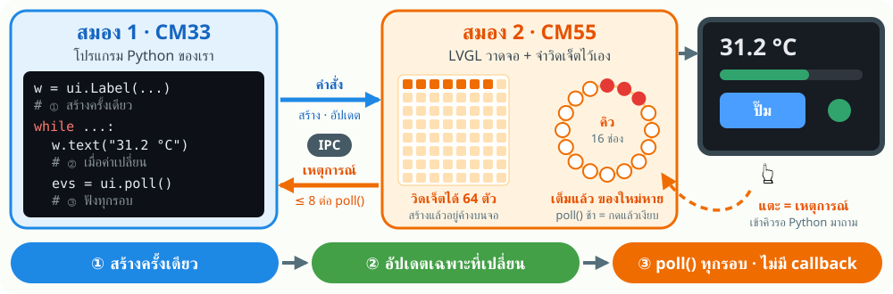
ui.poll()
ui
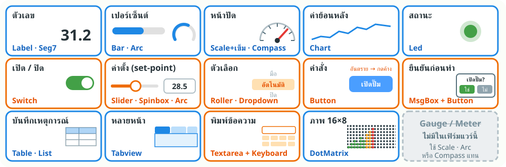
prop(ui.PROP_SCALE_NEEDLE, (ความยาว << 16) | ค่า)
PROP_CHART_POINTS
เป้าหมาย: เห็นว่าตัวเลขตัวเดียวแสดงได้หลายแบบ แต่ละแบบตอบคำถามคนละข้อ และเห็นว่า ค่าไม่เปลี่ยน = ไม่ต้องส่งไปจอ
ลองทำ · cp4_01_one_value_many_faces.py
cp4_01_one_value_many_faces.py
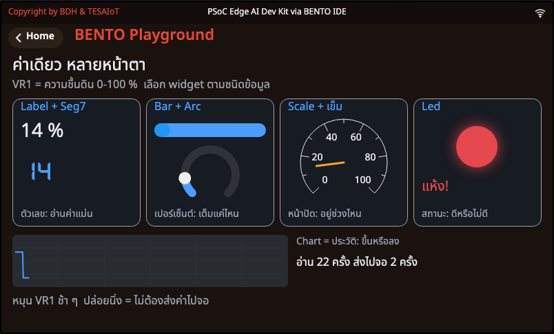
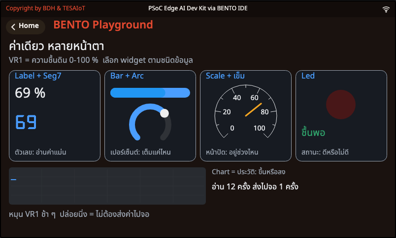
value=
color
min
max
value
disable()
เป้าหมาย: ใช้ color() prop() show()/hide() disable() size() ให้หน้าตาบอกว่า ต้องรีบไหม และ ปุ่มไหนใช้ไม่ได้
color()
prop()
show()/hide()
size()
ลองทำ · cp4_02_style_at_runtime.py
cp4_02_style_at_runtime.py
pump_allowed()
Emulator ยังทำไม่ได้: enable()/disable() — ปุ่มใน Emulator จึงไม่เป็นสีเทา ไฟล์ดัก AttributeError ไว้ และเช็กถังซ้ำใน pump_allowed() ก่อนสั่ง ปั๊มจึงไม่เดินตอนถังต่ำทั้งบนบอร์ดและใน Emulator
enable()/disable()
AttributeError
{'handle': id, 'type': ชื่อเหตุการณ์, 'value': ตัวเลข}
clicked
value_changed
toggled
.listen(...)
ValueError
listen()
เป้าหมาย: ฟังเหตุการณ์ทุกรอบจนคิวว่าง แล้วส่งต่อด้วยตาราง · อ่านค่าตั้ง (Slider · Roller · Switch) และ สั่งงาน (ปุ่ม) ในไฟล์เดียว
ลองทำ · cp4_03_event_router.py
cp4_03_event_router.py
ชนิด = ค่า
evs = ui.poll() # 1) ฟัง: ดึงจนคิวว่าง (ครั้งละ <= 8) last = None while evs: for ev in evs: p = s["pump"] note = dispatch(router, s, ev) # 2) ตาราง -> ตัวจัดการ last = ev if note: w["note"].text(note) if s["pump"] == p: beep("tap") # ปั๊มไม่เปลี่ยน = เสียงกด (ปั๊มเปลี่ยน show_pump ส่งเสียงเอง) evs = ui.poll() if last: # ลาก Slider ได้หลายใบต่อรอบ: เขียนจอครั้งเดียว w["last"].text("%s = %d" % (last["type"], last["value"]))
dispatch()
router.get((ev["handle"], ev["type"]))
.value()
คิด: ถ้าเปลี่ยน while evs: เป็นเรียก ui.poll() ครั้งเดียวต่อรอบ แล้วลาก Slider เร็ว ๆ คิว 16 ช่องจะเป็นอย่างไร — แล้วการแตะ "หยุด" ที่ตามมาเสี่ยงอะไร?
while evs:
พื้นที่ ui.screen() = 792 × 398 px · ตำแหน่ง x, y, w, h นับจากมุมซ้ายบน
ui.screen()
x, y, w, h
parent=
ขีดจำกัด: วิดเจ็ต ≤ 64 ตัว · ข้อความใน Label ≈ 126 ไบต์ (ไทยตัวละ 3 ไบต์ นับสระและวรรณยุกต์ด้วย) · Chart กว้าง ≤ 400 · ไม่ใช้ Spinner
TICK_MS ≥ 500
เป้าหมาย: จัดจอแบบตู้ควบคุมจริง: สถานะเห็นทุกหน้า · แยกหน้าด้วยแท็บ · ยืนยันก่อนเปิดปั๊ม แต่ หยุดทันที · ทุกเหตุการณ์ลงบันทึก
ลองทำ · cp4_05_hmi_page_pattern.py
cp4_05_hmi_page_pattern.py
build()
update()
handle()
ยังทำไม่ได้: ปุ่มที่เติมใน MsgBox ด้วย add_button() ไม่ส่งเหตุการณ์กลับมาให้ Python (ทั้งบนบอร์ดและ Emulator) → ไฟล์วาง ui.Button จริงสองปุ่มทับกล่องไว้เป็นคำตอบ · กล่องไม่ล็อกทั้งจอ แท็บและ "หยุด" ยังแตะได้
add_button()
ui.Button
.listen("long_pressed")
type
WARN_BELOW
DRY_BELOW
value=28
pos()
w["tank_bar"].pos(494, 210)
cp4_03_practise.py
(id, type) → ตัวจัดการ
TANK_MIN
ระดับ 1 เดาไว้ตั้งแต่ เล่น ③ · ระดับ 1–2 เฉลยในคาบ · ระดับ 3–4 เป็นการบ้าน รันใน BENTO Emulator ได้
สร้างครั้งเดียว อัปเดตเฉพาะที่เปลี่ยน ฟังเหตุการณ์ทุกรอบ และคำสั่งอันตรายต้องยืนยัน
poll()
การ์ดออกแบบของกลุ่ม ช่อง "โชว์": วิดเจ็ตสำคัญ 3 ตัว · สถานะอะไรต้องเห็นเสมอ · คำสั่งไหนต้องยืนยัน?
LVGL Lessons On ESP32 01: Introduction ช่อง Michael ee https://www.youtube.com/watch?v=y5O7zKFdgPk
คลิปใช้บอร์ด ESP32 และภาษา C — ดูเพื่อเข้าใจว่า LVGL คืออะไร ไม่ต้องทำตามโค้ด บนบอร์ดของเราสั่ง LVGL ผ่านโมดูล ui ของ Python
ดูแล้วตอบ: วิดเจ็ตที่เห็นในคลิป ตรงกับช่องไหนในตารางเลือกวิดเจ็ตของเรา และบนบอร์ดเรา สมองตัวไหนเป็นคนวาดมัน?
1 · วัด อ่านให้ถูกจังหวะ แปลงให้มีหน่วย และสอบเทียบก่อนเชื่อ
2 · ตัดสิน กรองตามรูปของสัญญาณรบกวน ตัดสินด้วยขั้นบันไดที่ต่ำที่สุดที่ได้ผล และให้ AI มีสิทธิ์ตอบว่าไม่แน่ใจ
3 · ทำ สถานะหนึ่ง ภาษาเดียว · ส่งเมื่อเปลี่ยน + ส่งว่ายังอยู่ · ทุกคำสั่งต้องมีคำยืนยันและทางถอยที่ปลอดภัย
4 · โชว์ สร้างครั้งเดียว อัปเดตเฉพาะที่เปลี่ยน ฟังเหตุการณ์ทุกรอบ และคำสั่งอันตรายต้องยืนยัน
คิดก่อนกรอกการ์ด: โปรเจกต์ของกลุ่มทำผิดกฎข้อไหนอยู่ตอนนี้บ้าง? ข้อไหนแก้ได้ภายใน 10 บรรทัด?
socket
network
ssl
machine
pots
header.pwm
header.uart_*
ui.tone
edge_ai.select()
ข้อ 1: กฎหนึ่งบรรทัดข้อไหนที่โปรเจกต์ของกลุ่ม ยังขาด และจะเติมตรงไหน …
ข้อ 2: ในโปรเจกต์ของกลุ่ม จุดไหนควรให้ระบบตอบว่า "ไม่แน่ใจ" แทนการเดา …
เกณฑ์ผ่านคาบ
การบ้าน (BENTO Emulator)
วิดีโอ (YouTube — ลิขสิทธิ์เป็นของเจ้าของช่อง ใช้ด้วยการฝัง/ลิงก์) · ตรวจชื่อคลิปและช่องด้วย YouTube oEmbed ก่อนเผยแพร่
ภาพที่ทำขึ้นเองสำหรับคอร์สนี้: ปก · อินโฟกราฟิกทุกภาพที่วาดด้วย SVG/HTML (ห่วงโซ่การวัด ห้ารูปร่างของข้อมูล ไทม์ไลน์ปุ่ม ADC aliasing การสอบเทียบ บันไดข้อมูล สัญญาณรบกวน EMA z-score บันไดการตัดสินใจ state machine สเปกตรัม ประตูความมั่นใจ บันไดการสั่งงาน ภาษาสถานะ รูปแบบเสียง รายงานเมื่อเปลี่ยน คำสั่ง-ยืนยัน สองท่อ Modbus สองสมอง ตัวเลือก widget ปุ่มปรับหน้าตา เส้นทางเหตุการณ์ กริดจอ กฎ HMI การ์ดออกแบบ) · ภาพหน้าจอทุกภาพจาก BENTO Emulator (ค่าเซนเซอร์ MQTT ไมโครโฟน และผล AI เป็นของจำลอง)
อีโมจิ: Twemoji — Twitter, Inc. และผู้ร่วมพัฒนา (jdecked/twemoji) — CC BY 4.0
ข้อมูลฮาร์ดแวร์และ API: ตรวจจากซอร์สของเฟิร์มแวร์ที่ใช้ในคอร์สนี้ · TESAIoT Dev Kit SDK — https://tesaiot.github.io/tesaiot-pse84-devkit-sdk/ · ข้อกำหนด Modbus: Modbus Organization — https://modbus.org/specs.php
fit-css